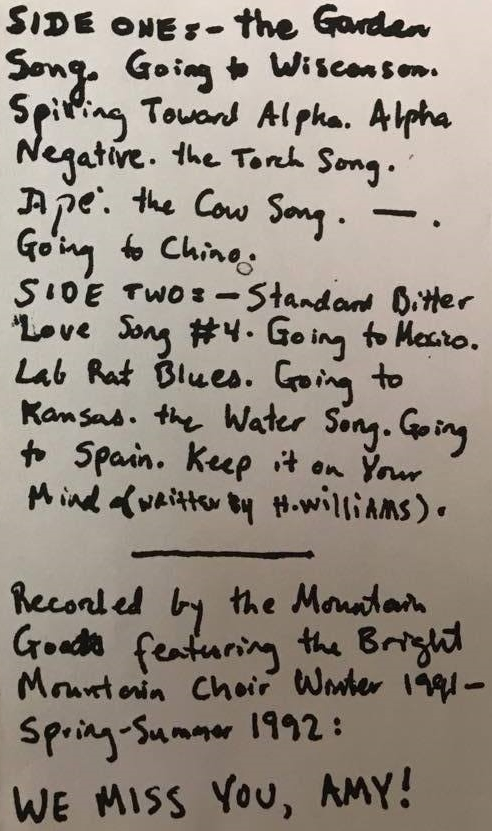
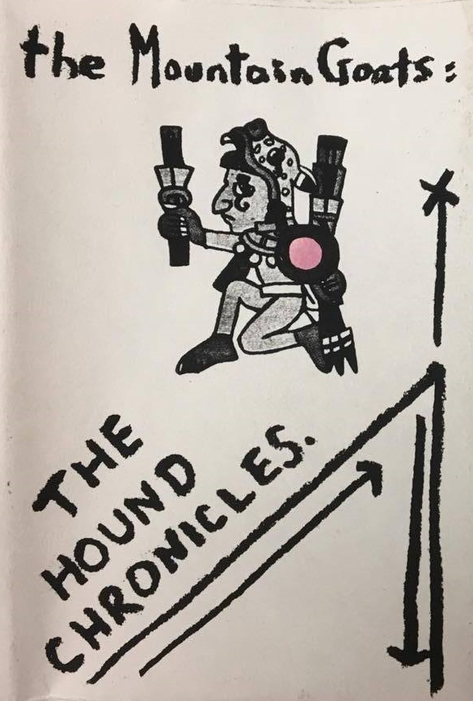
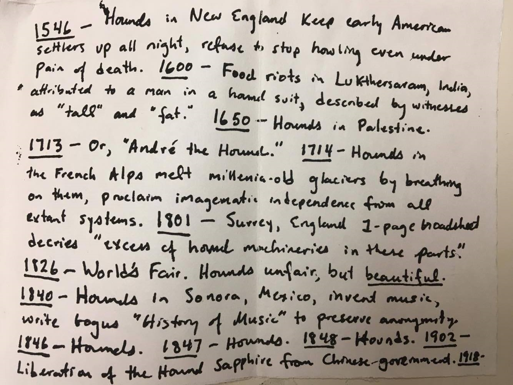

 

Title: The Hound Chronicles 1 2
Released: 1992 3
Label: Shrimper
1546 – Hounds in New England keep early American
settlers up all night, refuse to stop howling even under
pain of death. 1600 – Food riots in Lukthersaram, India,
attributed to a man in a hound suit, described by witnesses
as “tall” and “fat.” 1650 – Hounds in Palestine.
1713 – Or, “Andr‚ the Hound.” 1714 – Hounds in
the French Alps melt millenia-old 4 glaciers by breathing
on them, proclaim imagematic 5 independence from all
extant systems. 1801 – Surrey, England 1-page broadsheet
decries “excess of hound machineries in these parts.”
1826 – World’s Fair. Hounds unfair, but beautiful.
1840 – Hounds in Sonora, Mexico, invent music,
write bogus “History of Music” to preserve anonymity.
1846 – Hounds. 1847 – Hounds. 1848 – Hounds. 1902 –
Liberation of the Hound Sapphire from Chinese government. 1918 - 6
“Where’s Spike when you need him?”
“I’m warning you.”
“You’re warning me?”
“Hey, cut it out.” 8
I see the flowers in your garden are in bloom
I see the flags are flying high
I hear you’ve gone and rearranged things in your room
I guess you’re trying to cut off my air supply
I came toward your window, real slowly
I knew deep down I was about to strike oil
I guess by the now the flowers in your garden know me
I felt them trying to get at me through the soil
My bare feet felt the cool, soft dirt
Moving up my ankles, but I don’t fear you
The thorns began tearing at my shirt
But I didn’t even care when they tore clear through
Your garden can’t hurt me
Your flowers don’t threaten my life
Your garden can’t hurt me anymore
Your flowers don’t threaten my life
There was the sound of a lake boiling over
On that day
Everyone said just to sit still
But the thickening air got in my way
So the hook’s been baited now
Yeah the cheese is on the water
Yeah the water’s been cleansed of all impurities 10
But now it really doesn’t matter
Let’s go, let’s go
Wisconsin bound
Wisconsin bound
Wisconsin bound, yeah
Wisconsin bound
The bottom of the boat was a hotplate come alive
But the boat wasn’t real, and this is how I feel
You don’t know where you are until you arrive
And the frogs sang out from the distant banks
And you say you need me in California
But no thanks
Wisconsin bound
Wisconsin bound
Wisconsin bound
Yeah, Wisconsin bound
Let’s go
I hear you moving in the hallway
I hear you sharpening your claws
I hear you polishing your teeth sometimes
But I don’t mind
And I hear you out in the garage
I hear you messing with the motor
I hear you tinker with the engine sometimes
But I don’t mind
And I hear you moving in the kitchen
I hear you in there late at night
I notice when you leave the gas jets on sometimes
But I don’t mind
The house was pretty and the yard was wide
And I felt strong with you at my side
Your eyes at night had a beautiful glowing in them
And I knew in my heart just what was growing in them
Ah, but you made me drink poison
It felt smooth running down my throat
I love you, and you made me drink poison
It was cool and smooth and sweet
Do you remember?
We had a bed of daisies thriving in the yard
And I quit my job, so I could hold you all the time
I tried to stop the thing metastasizing 16 in us
But in the warm, slow evening
I could feel it rising in us
Ah, and you made me drink poison
It felt so smooth sliding down my throat
I love you so much, and you made me drink poison
It was cool and smooth and sweet and cool
And smooth and sweet and cool and smooth
The sun was coming up, and our friend was sound asleep
But we saw through the window that the water ran so deep
That you couldn’t make out the ocean floor
Then I saw you in the light
I couldn’t take it any more
Give me your hand
Give me everything you’ve got
And the light from window will fall on us burning hot
Just like a torch
The air was humid; I will not forget
When we stepped outside, I hear your footsteps
Now in my mind, it’s a soft sound
Almost imperceptible against the giving ground
Let me kiss your eyelids with my lips
Let me feel the heat coming off your fingertips
Just like a torch
You’ve been away for quite some time
And now the rules are different,
Now everything’s mine
Backtrack. Hey say, what’s the problem?
Here’s the problem:
Everything’s mine
I can’t be quiet
I can’t be quiet any more
I can’t be quiet
I can’t be quiet any more
Yeah
You’ve been away for quite some time
And now the rules are different
Now everything’s mine
Backtrack. Hey, what’s the problem?
Here’s the problem:
Everything’s mine
I can’t be quiet
Bang pow, look at me now
Don’t let the cows stray off too far
Come down, take a good look around
See how the cows start to shine like light bulbs
I love the cows
I love the cows
I love the cows, yeah
I love the cows
Rain comes, strikes you dumb
Re-seed the meadow so the cows don’t starve
Mud puddle’s a fine place to cuddle
If you’re a mosquito or a mosquito’s baby
I love the cows
I love the cows
I love the cows
I love the cows
They’re smiling in your face
All the time they wanna take your place 22
Yeah you know who I mean
Talkin’ about those cow-machines
I love the cows
I love the cows
I love the cows
I love the cows
(none) 23
I’d like to say hello
To all our friends from Chino
To the people of Chino, hello
I’d like to say hello
To all our friends from Chino
To the people of Chino, hello
I know how hard it is down in Chino
I know how you struggle just to get by
I know they got farm fresh eggs down in Chino
And tract homes reasonably priced
I’d like to say hello
To all our friends from Chino
To the people from Chino, hello
I’d like to say hello
To all our friends from Chino
To the people from Chino, hello
Convenient access to the 60 freeway
Accredited medical care down at Chino Valley Hospital
A unified school system, the likes of which you won’t find elsewhere
And friendly people
I would like to say hello
To all our friends from Chino
To the people from Chino, hello
I’d just like to say hello
To all our friends from Chino
To the people from Chino
Hello
Well I see you’ve left me a photograph
Of a leopard tearing an antelope in half
What have you done
What have you done
What have you done
With our love
What have you done
Well I see you’ve resorted to petty theft
You want to take something from me
But there’s nothing left
What have you done
What have you done
What have you done
With our love
Where have you put it
Well I hear you calling from way over there
And I can’t find it anywhere
What have you done
what have you done
What have you done
With our love
What have you done
I saw you at your window
I saw you in the sun
I saw you in the window looking out
I reached my hand in there
Then I touched your hair
And felt myself burn in the morning
And the chickens were screaming
Black dog at my heels
And the bluejays were coughing up in the trees
I’d forgotten my name
I felt kind of ashamed
And felt myself burn in the morning
I saw you at your window
At the beginning of summer
And invisible stars sent their heat down
I imagined your touch
It was almost too much
Burned like a bonfire in the morning
Bryce- just so i don’t forget, there was a comment about this being a true story in one of the interviews from Christopher’s flikr I’ll find next time
I saw you. I saw your hair
I could spend the rest of my life in there
I saw you and I sank into your eyes
I’m not going to apologize
Because you with your own hands
Made the whole world 28
You can’t fool me
I’m onto you now
Because you with your own hands
Created everything
You can’t fool me
I’m onto you now
Yeah, I saw you, but you saw me first
Living water to quench my thirst 29
And you tell me quiet down 30
But I have no doubt
I know what you’re all about
Because you, with your own hands
Made the whole world
You can’t fool me
I’m onto you now
Because you, with your own hands
Created everything
You can’t fool me any more
I’m onto you now
You were all were dressed in green
Clouds bounced against the edges of the sky
You had the prettiest hair I’d ever seen
We saw the world passing by
There was an ocean’s droning
Though we were nowhere near the shore
We heard each other giggling and moaning
Then we couldn’t hear each other any more yeah
When my head was resting on your breastbone
I could hear your beating heart
24 hours later you had left me completely alone
I heard the whole world come apart
And you were all dressed in green
Rising in the sky was an unfamiliar star
You know, you know what I mean
Yeah I remember who you are
Water came springing out the side of the wall
And I guess the same thing will happen to us all
We don’t know how to explain what I mean
I mean to say it’s kind of hard to explain now
Let them kill me
Let them kill me
Let them kill me
Let them kill me
Water came down through the cracks in the ceiling
But this time the water had a different feeling
It’s the sort of feeling that is hard to explain
So, let me put it to you in a different way now
Let them kill me
Let them kill me
Let them kill me
Let them kill me
You’re the salesman. I’m the buyer
You’re the tractor. I am the tire
I’m the glass. You’re the water that fills me
I hear them coming now
Let them kill me
Let them kill me
Let them kill me
Let them kill me now
Let them kill me. Yeah!
Let them kill me
Let them kill me
Let them kill me
Let them kill me
It’s heaven up here
But it’s heaven down there
And you’re gonna leave me
Now I don’t care
It’s heaven outside
But it’s heaven indoors
Well go on and leave me
I don’t care any more
I hear the airplane coming
I hear the airplane coming
I hear the airplane coming now
It can’t touch me
I see you going up the little stair
Go on and board the plane
I don’t care I-
I see you hold his hand
I see you wave good-bye
I don’t know you anymore
So I’m not going to cry now
I see the airplane coming
I feel the airplane coming
I hear the airplane coming now
It can’t touch me
“It’s a quarter ‘til 2 on the 23rd of February and this is a Hank Williams song.”
Now if you stay out
And start playing around
Your baby’s gonna burn your playhouse down
You better keep it on your mind
You better keep it on your mind
You’ll be a-moanin’ and a-groanin’
Lord, you better keep it on your mind
Now wrong is wrong
And right is right
If you make a pig mad
He’s sure gonna bite
You better keep it on your mind
You better keep it on your mind
I’ve had it proven to me
Lord, you better keep it on your mind
Every fuss got the same old end
I don’t believe the good lord
Meant for a man to win
You better keep it on your mind
You better keep it on your mind
You’ll be a-groanin’ and a-hoppin’
Lord, you better keep it on your mind
Now if she gets mad
And tells you goodbye
There’s not a thing that you can do
But sit at home and cry
You better keep it on your mind
You better keep it on your mind
You better call her sweet mamma
Lord, you better keep it on your mind
(placeholder) ↩
(placeholder) ↩
The Hound Chronicles was re-released by Merge in 2012, as a double CD with Hot Garden Stomp. ↩
‘Millennia’ is misspelled here. ↩
‘Imagematic’ does not appear to have been a word in 1992. ↩
The liner notes depict fictional events involving hounds, though dogs did exist in the area now known as Palestine in 1650, and dogs in general did exist in the period of 1846-1848. ↩
This song is narrated from the perspective of a stalker, a subject which John has since distanced himself from:
“Like a lot of college singer-songwriter guys, I thought it’d be really intense if you had songs where the rejected lover is, like, totally stalking somebody. You may find this with your guys with acoustic guitars in college, is that they write these songs and they think that you will like them better if the protagonist in their song is, like, stalking his beloved. Guys are confused; they grow out of this, right? But for the moment, they really think it’s super intense to have a narrator who’s going to immolate himself if he doesn’t get the love he wants. I went through that myself with the songs; this is on The Hound Chronicles and I feel really silly playing it. It’s called ‘The Garden Song’.” – 2006-12-02 - Pitzer College - Claremont, CA ↩
This sample from the film 976-EVIL appears to continue throughout the entire track; but only the first part, before the song starts, is audible. At approx. 57:30 in the movie there is a fight between two high school-aged boys: “Where’s Spike when you need him?” “I’m warning you” “You’re warning me?” “Cut it out” ↩
Going to Wisconsin is part of the Going to … series. ↩
Spilling Toward Alpha is part of the Alpha Couple series. ↩
“This is another one of those little songs, uh, about two people who I love so much that I continue to cause them to harm one another, uh, and I imagine them in my mind cursing me, but they can’t do it without my permission, ‘cause they’re my people, so. It’s a very old song. I hope someday they’ll forgive me, but I suspect that they won’t.” – 2001-06-23 - Bottom of the Hill - San Francisco, CA ↩
“This song also has a message, but it’s a sort of simpler message. And that is: if the person that you live with and love is trying to kill you, it’s best to leave.” – 2002-03-07 - Independent Media Center - Urbana, IL ↩
Alpha Negative is part of the Alpha Couple series. ↩
“Well, there was this one guy who always wanted to hear that one. He’s been showing up for twenty years. But everybody else was like, ‘Wow, that was weird and not like the other songs. It seemed like it was written by a very different person who, you know, had a little more death in his heart than the other one we’ve come to know, right. That’s true.’” – 2014-04-20 - Old Town School of Folk Music - Chicago, IL ↩
metastasizing means to spread or change injuriously, especially used in pathology to refer to cancer spreading from one body part to another. ↩
(placeholder) ↩
(placeholder) ↩
The Hebrew word שקט means ‘silence’ (noun), or ‘be at peace’ (verb). ↩
(placeholder) ↩
(placeholder) ↩
These two lines are from The O’Jays’ song, Back Stabbers. ↩
This track consists of 17 seconds of modulated tuning sounds and has no lyrics. ↩
Going to Chino is part of the Going to … series. ↩
(placeholder) ↩
Standard Bitter Love Song #4 is part of the Standard Bitter Love Song series. ↩
Going to Mexico is part of the Going to … series. ↩
Referencing God creating everything with his hands. Multiple Bible verses use similar language, such as Isaiah 45:2, “I made the earth, I created the people who live on it. My hands stretched out the heavens, I gave orders to all the heavenly lights”; Psalms 8:3 observes that the heavens were “made by God’s fingers” and Psalms 19:1 “The heavens declare the glory of God; the sky displays his handiwork.” ↩
Water is a rich symbol in the Bible. In Jeremiah 2:13 and 17:13 God calls himself “The living water.” Jesus speaks about it in John 4:10, “If you knew the gift of God and who it is that asks you for a drink, you would have asked him and he would have given you living water.” ↩
Possibly a reference to Luke 4:35, in which Jesus silences a possessed man who is afraid of him and rebuked the demon inside him. “Be quiet!” Jesus said sternly. “Come out of him!” Then the demon threw the man down before them all and came out without injuring him. However, God often instructs silence, quiet, peace etc and there are many hundreds of verses which encourage this practice. ↩
Going to Kansas is part of the Going to … series. ↩
(placeholder) ↩
(placeholder) ↩
Going to Spain is part of the Going to … series. ↩
“It’s one of the most depressing songs I ever wrote, for me, anyway.” – 1996-03-16 - Lintfabriek - Kontich, Belgium ↩
This is a cover of Hank Williams’ You Better Keep It on Your Mind. It is written simply as Keep it On Your Mind on the album cover. ↩
(placeholder) ↩